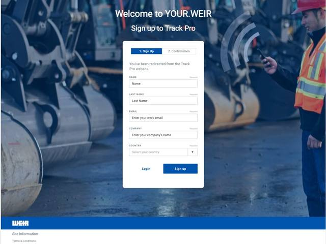
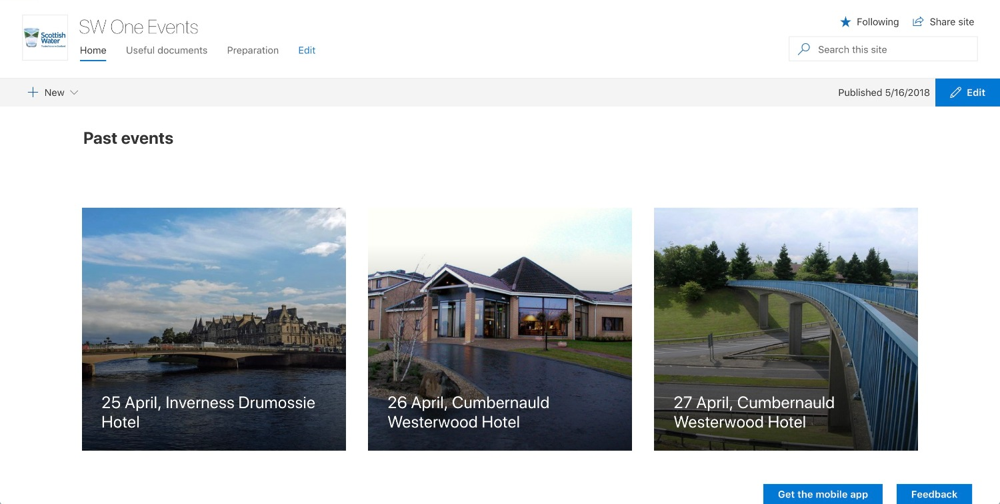
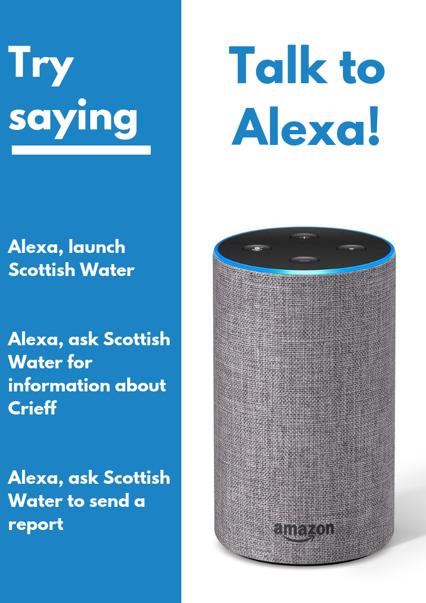
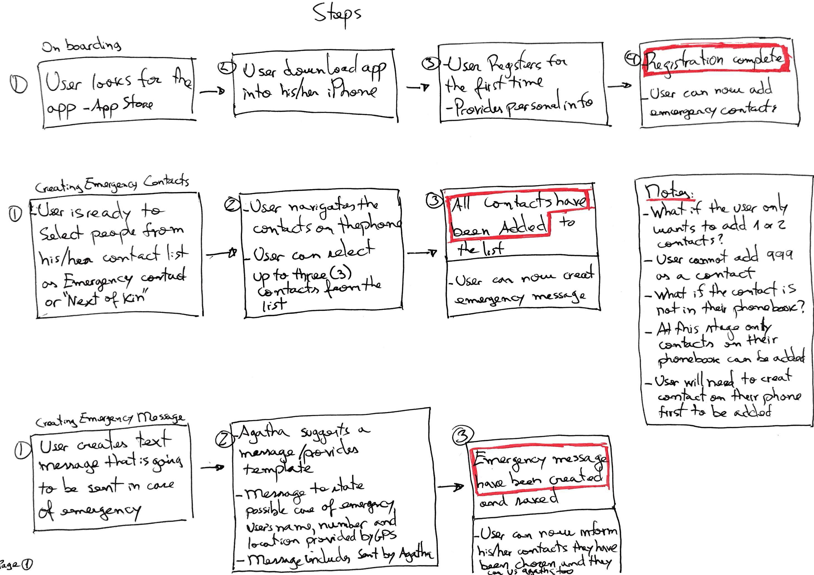

Work
Product management, design, and the odd voice interface.
I've spent my career at the intersection of product, design and research — mostly inside large organisations (Scottish Water, Weir Group), occasionally as a founder building something of my own. The thread running through all of it: understand the problem properly before you touch the solution.
Want the full CV?
Leave your email and I'll send it over directly.
Professional case studies
A closer look at how I've approached product — from platform work inside Scottish Water and Weir Group to founding and running Agatha end to end.
Momentini
A baby tracker built with Claude Code, used daily. Responsive, multi-user, iPad-first — with a live Linear roadmap behind it.

Proactive Journeys
A feature that provides self-service sign-up and access requests for Weir's Customer Portal. I took it from discovery to a shipped, tested release.

SW One
A mobile and web solution for creating and managing events for Scottish Water's Executive and Senior Leaders — built on existing platforms rather than a new app, saving the business over £50K a year.

Alexa Skill
A voice interface built to show senior leaders what conversational AI could do for customer service, before anyone had asked the question.

Agatha
A mobile app for solo runners and cyclists that could raise the alarm when they couldn't.
Public speaking
A talk on voice interfaces and what they meant for customer service at Scottish Water.

Title, event and date to be confirmed — placeholder caption for now. Opens on YouTube.
Also spoken at